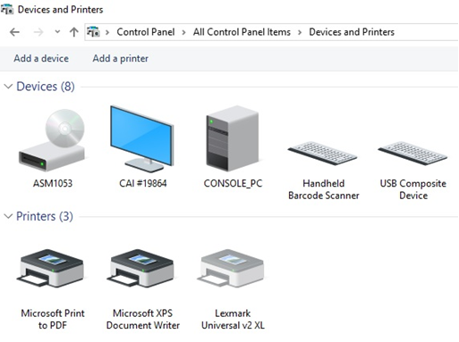
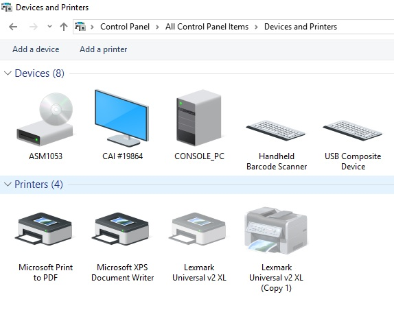

This procedure describes how to install a Laserjet printer when installing a new system, installing a new printer, or connecting to a network printer. The Laserjet printer is used for both patient result reports and Help system reports within the user interface.
Pre-requisites:
Manufacturers recommend having the PC and printer power off, when connecting the printer.
Perform this procedure when installing a new system, installing a new printer, or connecting to a network printer.
Caution: Do not load any of the software provided by the printer manufacturer. Loading unknown software can affect the operation of the system PC.
This procedure provides instructions for installing any of these Laserjet printers on all DxI or Access systems:
For Windows 8 and Windows 10 System
Note: Okidata and HP Laserjet printers previously used by BEC are not compatible with Windows 8 and must be replaced with a Lexmark printer. The Windows 8 PC has a universal Lexmark print driver installed for the following printers.
Press the
Windows key, type
control panel & select the
Control Panel app.
Select
Devices & printers.
Windows 10 automatically adds printers as soon as a new one is detected. Observe the default printer driver icons currently available in the
Devices and Printers windows. After the printer is first connected and powered on,
Windows 10 will create a new driver icon for the printer.
Setup the printer.
Unpack the printer, install the toner cartridge according to the instructions in the printer box, and position the printer on the cart or bench top.
Connect the printer to the PC.
If the printer connection will be through a USB cable, then connect the USB printer cable from the printer to the PC. Windows will see the printer and create a USB port for the printer.
If the printer connection will be through a network then connect a network cable from the printer to the system network hub and another network cable from PC network port #3 to the network hub, or connect the printer directly to the PC network port #3 using a crossover network cable.
If the printer connection will be through the network then Set the printers internal IP address using the menu panel on the printer. Find the menu choice that allows entry of a TCP/IP V4 address. Use the up/down arrows to enter the IP address 134.217.96.200.
Connect the power cable from the printer to the wall outlet and power on the printer.
After powering on the printer, observe the
Devices and Printers windows on the PC and determine which driver icon was newly created.

Caution: Do not connect the printer to the UPS. It may cause an overload when printing. The UPS may beep to indicate there is a problem.
Select a printer on the PC console.
Note: If this PC does not have the printer physically connected to it, then proceed to the Add a Printer step.
Right click on the newly created printer icon and set it to default.
Note: Replacement printers that are the same model as the original printer will appear as a copy of the original driver icon, like this
Lexmark Universal V2 XL(Copy 1), in the
Printers & scanners program. Always select the icon with the highest digit if multiple copies are present.

Right-click the default printer and select
See what's printing to open the print queue window.
Select
Printer, and if there is a checkmark for the
Use Printer Offline option, select
Use Printer Offline to clear the checkmark.
Close the print queue window.
Close the
Devices & Printers window.
From the user interface, select
Configure >>
System Setup >>
Reports Setup, choose the newly created driver from the drop-down menu and select
OK.
Verify the printer operation by printing a test page from the user interface.
From the user interface, press the
PrintScreen key to print a test page.
Install printer to Windows 8 or Windows XP system.
Unpack the printer, install the toner cartridge according to the instructions in the printer box, and position the printer on the cart or bench top.
Connect the power cable from the printer to the wall outlet and power on the printer.
Connect the printer to the PC.
If the printer connection will be through a USB cable, then connect the USB printer cable from the printer to the PC. Windows will see the printer and create a USB port for the printer.
If the printer connection will be through a network then connect a network cable from the printer to the system network hub and another network cable from PC network port #3 to the network hub, or connect the printer directly to the PC network port #3 using a crossover network cable.
If the printer connection will be through the network then Set the printers internal IP address using the menu panel on the printer. Find the menu choice that allows entry of a TCP/IP V4 address. Use the up/down arrows to enter the IP address 134.217.96.200.
Press the
Windows key on the lower left of the keyboard.
Select
Start >> Settings >>Printers and Faxes, or select
Control Panel >> Devices and Printers. The list of installed printers will open.
Right click the Lexmark printer to reveal a drop down menu.
The Lexmark Universal V2 XL printer might only appear after the printer has been connected to the PC and powered on.
If the printer is not present, then select add a printer and progress through the on screen installation steps.
For Windows 8 the printer install is mostly automatic. If needed select to add a printer. Let the auto detect find the printer. Use the
Lexmark Universal V2 XL driver.
Select
Properties >> Advanced tab. Check the driver is XP: (HPLaserJet 1200 PCL 5e, 1200 PCL, or LaserJet III) or Win 8: (Lexmark Universal V2 XL).
Select
Properties >> Ports tab.
Check mark the correct USB port. Typically USB001. Windows will create a new port each time it sees a new printer so the correct port number may vary.
For Network printing select the IP 134.217.96.200 port. If there is no .200 port or an alternate IP address is needed then Select
Add Port >> Standard TCP/IP Port >> New Port >> Next >> enter the IP address (134.217.96.200, let the port name auto fill)
>> Next (generic network card) >> Finish.
For Windows 8 network printing select
Add a printer >> Network Printer. The printer should be detected and installed automatically.
Right Click the printer and select "Use Printer On-line". The printer status should go to Ready.
Right click the printer and select "Set as Default".
In the UI select
Configure >> System Setup >> Reports Setup.
Select the LaserJet printer from the list of printers.
Note: If all the printers have been deleted on an XP PC, then add a HP LaserJet printer with the HP LaserJet 1200 pcl 5e driver and an appropriate port. Then change the name from HP to LaserJet. Using the Optra E driver with Windows XP tends to make the header / footer information run off the right edge of the page. The HP LaserJet 1200 driver was validated to work correctly. Windows 8 PCs use the Lexmark Universal driver.
Note: Refer to network diagrams below for more information.